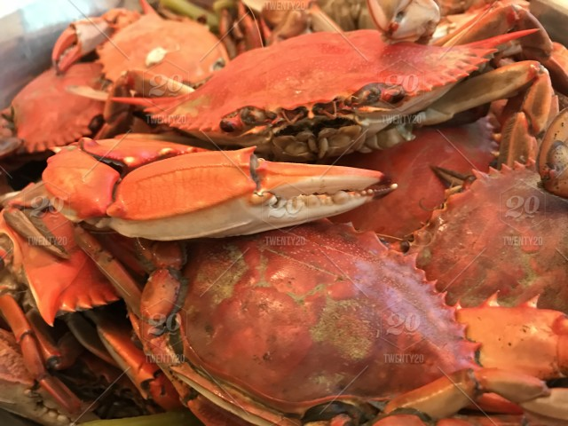

Poseidon's Crabs

Description
The simple way to experience tender and sweetness of the Ocean's bounty.
Poseidon - the god of the Sea enjoyed the bounty of his domain - oft catching
crabs and sharing them amongst men. We've scoured ancient Greek texts and
procured this recipe for you. Poseidon, enjoyed his bounty raw, but we have
adapted this recipe to practice safe cooking and avoid the ales of rash actions
Now set forth and hone your cookery skills so you may feast upon the sweet meat
of Poseidon's bounty.
Ingredients
- Two dozen (2lbs) live blue shell crabs
- 1/4lb melted butter
- Old Bay Seasoning (optional)
Steps
- Rinse live crabs clean and bring one inch of water in a stock pot to a
rolling boil.
- Using BBQ tongs, place crabs in pot and replace pot lid. (Optional) While
placing crabs in pot, generously coat both sides with Old Bay seasoning.
- Maintain high heat and steam crabs for 15 minutes (until shells turn
bright orange).
- Remove crabs from pot and place in large metal bowl. Serve immediately
along with melted butter for dipping.
Home - Odin Recipes